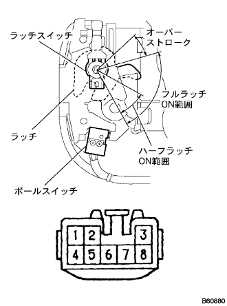
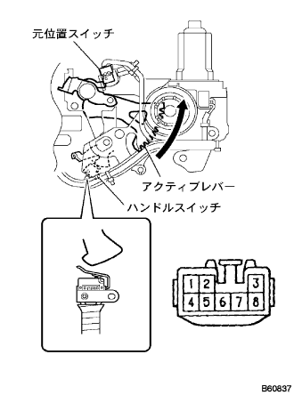

Power slide door lock ASSY No.1 LH single inspection |
| 1. Power slide door lock Assy No.1 LH inspection |
Full latch switch conduct inspection
|  |
Use SST (Toyota Electrical Tester) to check the conversation between the connector terminals at each latch position.
| Measurement conditions | Terminal number | standard |
|---|---|---|
| Fullatch ON range | 3-5 | There is an conductor |
| Overstroke | 3-5 | Without conduction |
Paul switch conduct inspection
Use SST (Toyota Electrical Tester) to check the conversation between the connector terminals at each latch position.
| Measurement conditions | Terminal number | standard |
|---|---|---|
| Half -latch OFF → ON | 7 ← → 5 | There is conduction → None |
| Full Latch OFF → ON | 7 ← → 5 | There is conduction → None |
|  |
Original position switch and handle switch conduct inspection
| Original position switch condition | Handle switch condition | standard |
| OFF (Active lever initial position) | ON (Handle initial position) | 8 ← → 5 terminals Without conduction |
| OFF (Active lever initial position) | OFF (When operating the handle) | 8 ← → 5 terminals Without conduction |
| ON (At the time of Closa) | ON (Handle initial position) | 8 ← → 5 terminals There is an conductor |
| ON (At the time of Closa) | OFF (When operating the handle) | 8 ← → 5 terminals Without conduction |